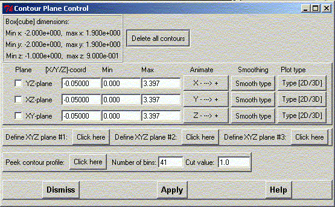
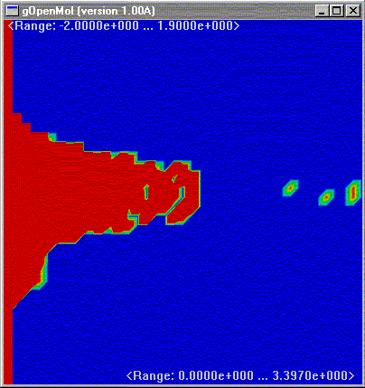
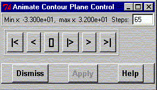

**************************************************************************
Contour Plane Manager Widget
Leif Laaksonen CSC 1997
**************************************************************************
Define a cutplane trough the contour surface grid data. The planes are defined to be perpendicular to the x, y and z axis.
It is possible to animate or move the planes "smoothly" using the animate facility behind the "X,Y and Z --->+" buttons. Press respective button to show the display along the X,Y or Z axis.
It is also possible to define any plane from three points or atoms. It is currently possible to define three different such planes. To define an own plane click on the any of the three buttons after the text "Define XYZ plane #1/2/3".

To delete all data click the "Delete all contours" button
It is not always easy to find the best plane (=plain with most information). To make this procedure a bit easier a "profile graph" can be generated. The graph is generated by dividing the range of observations in bins where the grid data is then placed. A blue colour shows very few observations in that bin, while a read colour shows a high number of observations in the bin. The current picture applies a bin cut value of 1.0, which means that the region shown is the region where there is 1 or more values in the bin. This bin cut value can be changed by changin the default value 1.0 in the input widget to an other value. Using the value of 1.0 gives already a good insight into the grid space.
The horizontal-axis (in the graph) defines the min and max values of the grid data and the vertical-axis (in the graph) is the range inside which the plane can move along the chosen axis x, y or z axis in the 3D space.
The following example shows that an YZ-plane can move along the x axis (in 3D) between the values -2.0 and 1.9 Angstrom, while the grid values varies between 0.0 and 3.397. From the graph one can read that most information is for a plane at x = 0.0 and a grid range of 0.0 to 1.6.

The smooth or animate display:

Line command: see plot command
**************************************************************************
LUL/1997
**************************************************************************